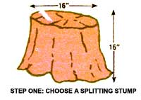
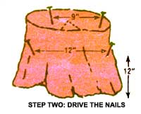
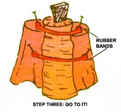

Here's a portable, budget-stretching, easy-does-it ...
Few homestead chores can be more aggravating-or more dangerous-than trying to split a log that refuses to stand still and take it! The next time you're faced with such a problem, you might ease your suffering by trying the following method.
You'll need a stump about 16" high and 16" in diameter, four 4" to 6" nails, and two heavy rubber bands, 2/3" to 1-1/2" wide (circles sliced from an inner tube are best ...but sturdy rubber bands will work).
Hammer two of the nails into the top of the stump at points 9 inches apart and 1 inch from the edge, and stretch one rubber band between them. Now, drive the second pair of spikes into the stump, placing them 12 inches from the bottom of that former tree and 12 inches apart. The other rubber band will run between these two nails. Finally, take the log you want to split, stand it against the stump, strap it in place with the elastic loops, and go to work with sledge or maul ...the assembly will hold your log securely while you split it!
|
 |
 |
 |